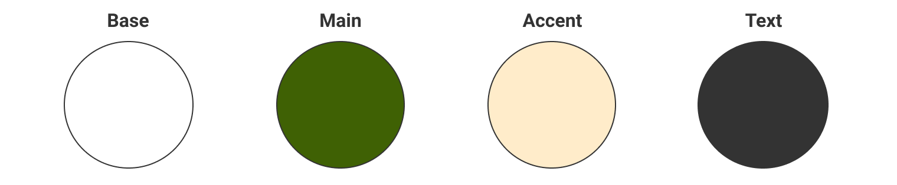

Gelateria MAKO 店舗サイト
概要 Overview
新宿駅のNEWoManに新たにオープンするジェラート店「Gelateria MAKO」のWebサイトです。
ジェラートの本場イタリアで10年間修行した店主が作る本格ジェラートかつオーガニックな素材を利用し、身体に優しいイメージを伝えられるように心掛けました。
- 制作期間：5日
- 担当箇所：デザイン
- 使用ツール：Illustrator、Photoshop、Figma、HTML、CSS、jQuery
- URL:https://maeda-garateliamako.netlify.app/
ターゲット
- 性別：女性
年齢：28歳
出身地：東京都
職業：会社員
家族構成：両親、社会人2年目の弟
年収：400万
住まい：都内の1LDKでひとり暮らし
学歴：都内の私大文学部出身
デザイン
ファーストビューではジェラートの写真ではなく、シンプルかつ、からだに優しいイメージを持ってもらうために牧場の写真を使用しました。またファーストビューだけをみてサイトを閉じてしまうユーザーが多いと知ったのでこの写真で「ジェラートはジェラートだ。」ではなく、「Gelateria MAKOのジェラートはどのようなものかもっと知りたい。」という気持ちでみてもらえるようにこのデザインにしました。
配色

オーガニックでからだに優しいイメージを与えたかったので全体的に淡い色と、ファーストビューでも使用している芝生の色を選択しました。
フォント
ターゲットが女性なので、女性らしくかつ優しい雰囲気のあるフォントを選択しました。